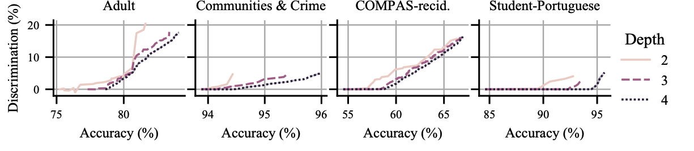
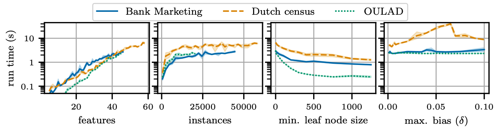

- 深さ 2 なら全データで 1 秒未満不均衡を 1% 以下にする制約で、DPF は 12 データのすべてで深さ 2 の最適な木を 1 秒未満で求めた。FairOCT は 8 データで 1 時間を超え、1 データではメモリが足りなかった（論文 Table 1）。
- Adult の深さ 4 で 1,012 秒45,000 件を超える Adult でも、深さ 4 の公平で最適な木を求められた。深さ 3 は全データで 1 分以内に解けた。
- パレート集合 29 個を 0.12 秒COMPAS recid. の深さ 2 で、精度と公平性のパレート集合全体（29 個の解）を 0.12 ± 0.04 秒で求めた。
小さな最適決定木を速く求める動的計画法に、木全体にかかる公平性の制約はそのままでは入らない
信用の審査や刑事司法のように差別に敏感な判断では、公平で、解釈しやすく、精度の高いモデルが求められる。保護属性をデータから外すだけでは差別が減るとは限らないので、分類器に公平性の制約を課す。決定木は小さいほど解釈しやすく、同じ大きさなら最適な木は平均してヒューリスティックの木より精度が高いので、小さな最適決定木が適している。
公平で最適な決定木を求める既存の方法（Verwer と Zhang、Aghaei ら、FairOCT）はどれも MIP で、規模が大きくなると解けなくなる。一方、公平性を考えない最適決定木は、木の構造による分離可能性を使う DP（DL8.5、MurTree、OSDT など）で速く求められる。精度だけなら、ノードで分岐する特徴量を決めたあと、左右の部分木を別々に解けばよい。ところがグループ間の公平性は木全体で測るので、木の一部の偏りが別の部分で打ち消されることがあり、左右の部分木を独立に最適化できない。
統計的パリティを、葉ごとの部分的な不均衡の和として書き、誤分類の最小化に制約として課す
特徴量もラベルも二値とし、保護属性 \(a\) で 2 つのグループに分ける。統計的パリティ（demographic parity）は、正の結果を受ける割合がグループで等しいこと \(\Pr(\hat y=1\mid a=1)=\Pr(\hat y=1\mid a=0)\) である。各グループで正の予測を受ける割合を \(\hat p_a=N_{\hat y,a}/N_a\) とし、不均衡を \(I=\hat p_a-\hat p_{\bar a}\) と書く。正のラベルを予測する葉 \(n\) の部分的な不均衡は次のとおりで、負のラベルの葉では 0、分岐ノードでは 2 つの子の和になる。
深さ \(d\) の木 \(h\) のうち、不均衡の絶対値を \(\delta\) 以下に保ちながら学習データの誤分類を最小にする木を求める。\(\delta\) を決めずに、誤分類 \(M\) と不均衡 \(I\) の 2 つを目的とするパレート集合を求めることもできる。論文の手法は機会均等のような別のグループ公平性にも簡単に広げられると述べている。
不均衡は絶対値で測るので、部分木だけを見ても、どちらの部分解がよいかは残りの木しだいで決まる
DPF の出発点は、2 つの目的のパレート集合を DP で求める Demirović と Stuckey の方法（非線形指標の最適決定木）である。この方法は部分解を足し合わせられること（加法性）と、各目的が小さいほうが良いこと（単調性）を前提に、部分問題を独立に解く。公平性は不均衡の絶対値で測るので、加法性も単調性も成り立たない。
たとえば、グループ A に不利な部分木と、グループ B に不利な部分木のどちらがよいかは、木の残りの部分で何が起きるかによる。同じグループ A に不利な 2 つの部分木でも、差別の小さいほうがよいとは限らない。残りの木でグループ A に有利な偏りがあれば、打ち消し合って全体の不均衡が小さくなりうるからである。
残りの木の不均衡の範囲が分かれば、最終的な不均衡の絶対値の上下界が求まり、部分解を比べて枝刈りできる
残りの木 \(R\) の不均衡の下界 \(\underline I_R\) と上界 \(\overline I_R\) が分かれば、ノード \(n\) を含む木の最終的な不均衡は \([\underline I_R+I_n,\ \overline I_R+I_n]\) に入る。そこから最終的な不均衡の絶対値の下界と上界が決まる。
これを使って支配関係を定め直す。解 1 が解 2 を支配するのは、誤分類が解 2 以下で、しかも解 1 の不均衡の絶対値の上界が解 2 の下界以下であるか、不均衡がちょうど等しいときである。\(\delta\) を決めて 1 本の木を求めるときは、絶対値の下界が \(\delta\) を超える部分解を「公平になりえない」として捨てる。残りの木の範囲は、片方のグループに一方のラベルを、もう片方に逆のラベルを全部つけたときの最大の差別から得るか、キャッシュした部分解の不均衡の最小値と最大値から得る。
図1 残りの木の範囲から最終的な不均衡の上下界を求める計算（論文の式 11・12・17 から解説者が作った計算機。値は % で、例として置いたもの）。
ほかにも、merge の前に互いの範囲から部分解を絞り込み、誤分類の順に並べて早めに打ち切るなどの改良を加えている。深さ 2 の専用の解法も使う。付録では、完全な二分木でない小さな木を探す拡張と、最悪の場合の計算量 \(\mathcal O(n_t^2+2^d|F|^d|D|)\)（\(n_t\) は深さ \(d\) の完全な木の数）を示している。
DPF は FairOCT より何桁も速く、深さ 2 は全データで 1 秒未満、深さ 3 は全データで 1 分以内に解けた
公平性を考慮した機械学習のデータの調査（Le Quy ら）に載っているデータを、同じ前処理と二値化で使った。最良の深さ 3 の木が自明な解とほぼ同じになる Diabetes と Law-school を除いた 12 データである。不均衡の上限を \(\delta=1\%\) とし、5 回の平均、1 回の制限時間は 1 時間、1 スレッドで実行した。比較相手は、事前の比較で Aghaei ら（2019）の MIP を大きく上回った FairOCT で、Gurobi 9.0 の既定のパラメータで解いた。
FairOCT は各データ点を二値変数で表すので、データが大きくなると解けなくなる。DPF でも深さ 4 では問題の指数的な性質が表れ、特徴量もデータも多いデータは 1 時間で解けなくなるが、45,000 件を超える Adult は解けた。新しい枝刈りがないと、深さ 4 を 1 時間以内に解けるデータは 12 個中 8 個から 4 個に減った。merge の改良は、公平性を考えない最適な木の不均衡が大きい Adult（18%）、COMPAS recid.（16%）、Dutch census（14%）で計算時間を 1 桁縮めた。
速くなったことで、精度と公平性のパレート集合全体を求められるようになった
Valdivia らの進化的アルゴリズムは一部の、最適とは限らないパレート集合を返し、FairOCT は不均衡の上限を変えて何度も解くことで、最適だが一部だけのパレート集合を作る。DPF はパレート集合全体を一度に求め、COMPAS recid. の深さ 2 では 29 個の解からなる集合を 0.12 ± 0.04 秒で求めた。

計算時間を最も左右するのは特徴量の数で、データの件数はある程度を超えるとほとんど効かない
深さ 3 で、特徴量の数、件数、葉の最小の大きさ、許す不均衡 \(\delta\) を変えた。特徴量の数を増やすと計算時間は指数的に増え、先行研究とも一致した。件数を増やしてもある程度から先はほとんど増えない。計算時間は merge する部分解の種類の数でほぼ決まり、その数は特徴量の数に強く、件数には弱くしか依存しないためである。葉の最小の大きさを大きくすると部分解の種類が減り、計算時間は大きく減った。精度にはふつう大きな影響はない。

\(\delta\) を 1% より緩めると、Dutch census では探索空間が広がり上下界も弱くなるので計算時間が増えた。さらに緩めると通常の最適木の探索に近づき、精度の上下界が効いて再び短くなる。公平性を考えないときの差別が 1.2%・3.0% と小さい Bank Marketing と OULAD では、\(\delta\) を変えても計算時間はほとんど変わらなかった（Dutch census は 14.1%）。
木の大きさを検証データで選ぶと、DPF の木は 12 データ中 7 データでヒューリスティックより有意に精度が高かった
付録では、データの前処理で差別をなくす Kamiran らの方法（KamPre）と、葉のラベルを後から付け替える方法（KamPost）とテストデータで比べた。\(\delta=5\%\)、深さ 3 まで、分岐の数を検証データで選ぶと、テストの差別が平均 5% 未満に収まった方法のなかで、DPF は 7 データで両者より有意に精度が高かった（\(p<5\%\)）。差は Student-Mathematics で 11.6%、Dutch census で 9.2% に達した。KamPost が最もよかったのは Ricci と Adult で、Adult では DPF の差別が上限を 0.1% 超えた。
テストデータでの差別のばらつきは特に小さなデータで大きく、どの方法もしばしば上限を超えた。差別についての過学習をどう減らすかは未解決の問題だと論文は述べている。
DP による最適決定木の系統に、部分問題を独立に解けなくする木全体の制約を持ち込んだ研究である
公平で最適な木はそれまで MIP の系統（Fair OCT、FairOCT）だけが扱っていた。DPF は MurTree や 非線形指標の最適決定木 と同じ DP の系統で、加法性と単調性が崩れる制約でも、残りの木の上下界を使えば部分解を比べて枝刈りできることを示した。同じ TU Delft のグループはのちに STreeD を発表している。
限界として論文は、二値の特徴量と二値分類だけを扱うこと、小さな木しか求められないこと、計算時間が特徴量の数に対して指数的に増えることを挙げている。今後の課題には、機会均等など別のグループ公平性への拡張、不均衡なデータのための目的関数（balanced accuracy など）、全部の部分解でなく代表的な一部だけを考えるヒューリスティックが挙がっている。
このページの数値・式・図は NeurIPS 2022 の論文集の PDF と補足資料による。書誌は NeurIPS の論文集のページの BibTeX で確認した。コードのリンクは論文に書かれたもので、gitlab.tudelft.nl には接続できず確認していない。
@inproceedings{vanderlinden2022fair,
title = {Fair and Optimal Decision Trees: A Dynamic Programming Approach},
author = {van der Linden, Jacobus G.M. and de Weerdt, Mathijs M. and Demirovi{\'c}, Emir},
booktitle = {Advances in Neural Information Processing Systems},
volume = {35},
pages = {38899--38911},
year = {2022},
doi = {10.52202/068431-2819}
}